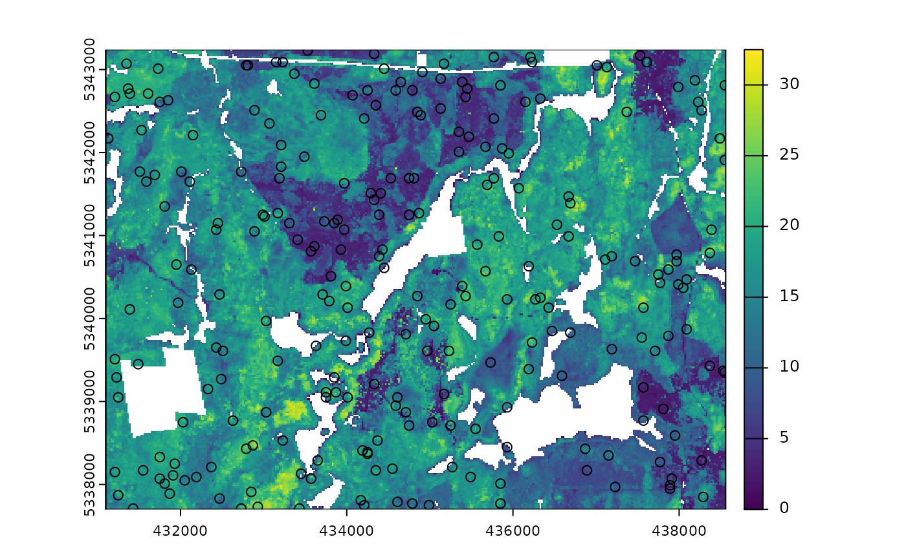

Currently, there are 9 functions associated with the
sample verb in the sgsR package:
| Algorithm | Description | Reference |
|---|---|---|
sample_srs() |
Simple random | |
sample_systematic() |
Systematic | |
sample_strat() |
Stratified | Queinnec, White, & Coops (2021) |
sample_sys_strat() |
Systematic Stratified | |
sample_nc() |
Nearest centroid | Melville & Stone (2016) |
sample_clhs() |
Conditioned Latin hypercube | Minasny & McBratney (2006) |
sample_balanced() |
Balanced sampling | Grafström, A. Lisic, J (2018) |
sample_ahels() |
Adapted hypercube evaluation of a legacy sample | Malone, Minasny, & Brungard (2019) |
sample_existing() |
Sub-sampling an existing sample |
sample_srs
We have demonstrated a simple example of using the
sample_srs() function in vignette("sgsR"). We
will demonstrate additional examples below.
raster
The input required for sample_srs() is a
raster. This means that sraster and
mraster are supported for this function.
#--- perform simple random sampling ---#
sample_srs(
raster = sraster, # input sraster
nSamp = 200, # number of desired sample units
plot = TRUE
) # plot
#> Simple feature collection with 200 features and 0 fields
#> Geometry type: POINT
#> Dimension: XY
#> Bounding box: xmin: 431190 ymin: 5337730 xmax: 438550 ymax: 5343230
#> Projected CRS: UTM Zone 17, Northern Hemisphere
#> First 10 features:
#> geometry
#> 1 POINT (432690 5342790)
#> 2 POINT (435190 5339610)
#> 3 POINT (436410 5341650)
#> 4 POINT (432270 5338350)
#> 5 POINT (436470 5342030)
#> 6 POINT (437050 5340730)
#> 7 POINT (435950 5342370)
#> 8 POINT (434370 5342490)
#> 9 POINT (436370 5342810)
#> 10 POINT (432370 5341310)
sample_srs(
raster = mraster, # input mraster
nSamp = 200, # number of desired sample units
access = access, # define access road network
mindist = 200, # minimum distance sample units must be apart from one another
buff_inner = 50, # inner buffer - no sample units within this distance from road
buff_outer = 200, # outer buffer - no sample units further than this distance from road
plot = TRUE
) # plot
#> Simple feature collection with 200 features and 0 fields
#> Geometry type: POINT
#> Dimension: XY
#> Bounding box: xmin: 431210 ymin: 5337830 xmax: 438530 ymax: 5343190
#> Projected CRS: UTM Zone 17, Northern Hemisphere
#> First 10 features:
#> geometry
#> 1 POINT (434490 5338290)
#> 2 POINT (434830 5341810)
#> 3 POINT (435510 5342010)
#> 4 POINT (436190 5340790)
#> 5 POINT (433190 5342350)
#> 6 POINT (435810 5339970)
#> 7 POINT (435210 5338950)
#> 8 POINT (432310 5341710)
#> 9 POINT (432970 5339650)
#> 10 POINT (438110 5339690)
sample_systematic
The sample_systematic() function applies systematic
sampling across an area with the cellsize parameter
defining the resolution of the tessellation. The tessellation shape can
be modified using the square parameter. Assigning
TRUE (default) to the square parameter results
in a regular grid and assigning FALSE results in a
hexagonal grid.
The location of sample units can also be adjusted using the
locations parameter, where centers takes the
center, corners takes all corners, and random
takes a random location within each tessellation. Random start points
and translations are applied when the function is called.
#--- perform grid sampling ---#
sample_systematic(
raster = sraster, # input sraster
cellsize = 1000, # grid distance
plot = TRUE
) # plot
#> Simple feature collection with 37 features and 0 fields
#> Geometry type: POINT
#> Dimension: XY
#> Bounding box: xmin: 431459 ymin: 5337752 xmax: 438515.6 ymax: 5343098
#> Projected CRS: UTM Zone 17, Northern Hemisphere
#> First 10 features:
#> geometry
#> 1 POINT (431459 5340689)
#> 2 POINT (431663.4 5339710)
#> 3 POINT (432072.3 5337752)
#> 4 POINT (432029 5342851)
#> 5 POINT (432233.5 5341872)
#> 6 POINT (432437.9 5340893)
#> 7 POINT (432642.3 5339914)
#> 8 POINT (432846.7 5338935)
#> 9 POINT (433051.2 5337956)
#> 10 POINT (433007.9 5343055)
#--- perform grid sampling ---#
sample_systematic(
raster = sraster, # input sraster
cellsize = 500, # grid distance
square = FALSE, # hexagonal tessellation
location = "random", # randomly sample within tessellation
plot = TRUE
) # plot
#> Simple feature collection with 174 features and 0 fields
#> Geometry type: POINT
#> Dimension: XY
#> Bounding box: xmin: 431183.5 ymin: 5337730 xmax: 438519.9 ymax: 5343203
#> Projected CRS: UTM Zone 17, Northern Hemisphere
#> First 10 features:
#> geometry
#> 1 POINT (438085.4 5337739)
#> 2 POINT (438365.8 5338155)
#> 3 POINT (437805.9 5338046)
#> 4 POINT (437235.8 5337784)
#> 5 POINT (438473.6 5338582)
#> 6 POINT (437604.4 5338233)
#> 7 POINT (436524.5 5338027)
#> 8 POINT (437760.8 5338457)
#> 9 POINT (437039.8 5338280)
#> 10 POINT (436047.2 5338112)
sample_systematic(
raster = sraster, # input sraster
cellsize = 500, # grid distance
access = access, # define access road network
buff_outer = 200, # outer buffer - no sample units further than this distance from road
square = FALSE, # hexagonal tessellation
location = "corners", # take corners instead of centers
plot = TRUE
)
#> Simple feature collection with 635 features and 0 fields
#> Geometry type: POINT
#> Dimension: XY
#> Bounding box: xmin: 431120.1 ymin: 5337713 xmax: 438540.1 ymax: 5343223
#> Projected CRS: UTM Zone 17, Northern Hemisphere
#> First 10 features:
#> geometry
#> 1 POINT (431120.1 5342563)
#> 2 POINT (431120.1 5342563)
#> 3 POINT (431395.8 5342649)
#> 4 POINT (431120.1 5342563)
#> 5 POINT (431225.3 5340764)
#> 6 POINT (431161.5 5340482)
#> 7 POINT (431120.1 5342563)
#> 8 POINT (431395.8 5342649)
#> 9 POINT (431607.8 5342453)
#> 10 POINT (431161.5 5340482)
sample_strat
The sample_strat() contains two methods to
perform sampling:
"Queinnec"- Hierarchical sampling using a focal window to isolate contiguous groups of stratum pixels, which was originally developed by Martin Queinnec."random"- Traditional stratified random sampling. Thismethodignores much of the functionality of the algorithm to allow users the capability to use standard stratified random sampling approaches without the use of a focal window to locate contiguous stratum cells.
method = "Queinnec"
Queinnec, M., White, J. C., & Coops, N. C. (2021). Comparing airborne and spaceborne photon-counting LiDAR canopy structural estimates across different boreal forest types. Remote Sensing of Environment, 262(August 2020), 112510.
This algorithm uses moving window (wrow and
wcol parameters) to filter the input sraster
to prioritize sample unit allocation to where stratum pixels are
spatially grouped, rather than dispersed individuals across the
landscape.
Sampling is performed using 2 rules:
Rule 1 - Sample within spatially grouped stratum pixels. Moving window defined by
wrowandwcol.Rule 2 - If no additional sample units exist to satisfy desired sample size(
nSamp), individual stratum pixels are sampled.
The rule applied to a select each sample unit is defined in the
rule attribute of output samples. We give a few examples
below:
#--- perform stratified sampling random sampling ---#
sample_strat(
sraster = sraster, # input sraster
nSamp = 200
) # desired sample size # plot
#> Simple feature collection with 200 features and 3 fields
#> Geometry type: POINT
#> Dimension: XY
#> Bounding box: xmin: 431110 ymin: 5337710 xmax: 438510 ymax: 5343230
#> Projected CRS: UTM Zone 17, Northern Hemisphere
#> First 10 features:
#> strata type rule geometry
#> x 1 new rule1 POINT (437530 5339370)
#> x1 1 new rule2 POINT (437550 5342590)
#> x2 1 new rule2 POINT (434870 5341610)
#> x3 1 new rule2 POINT (435330 5342670)
#> x4 1 new rule2 POINT (434910 5341810)
#> x5 1 new rule2 POINT (433530 5341610)
#> x6 1 new rule2 POINT (432670 5342890)
#> x7 1 new rule2 POINT (434010 5342710)
#> x8 1 new rule2 POINT (433550 5342950)
#> x9 1 new rule2 POINT (435890 5343150)In some cases, users might want to include an existing
sample within the algorithm. In order to adjust the total number of
sample units needed per stratum to reflect those already present in
existing, we can use the intermediate function
extract_strata().
This function uses the sraster and existing
sample units and extracts the stratum for each. These sample units can
be included within sample_strat(), which adjusts total
sample units required per class based on representation in
existing.
#--- extract strata values to existing samples ---#
e.sr <- extract_strata(
sraster = sraster, # input sraster
existing = existing
) # existing samples to add strata value toTIP!
sample_strat() requires the sraster input
to have an attribute named strata and will give an error if
it doesn’t.
sample_strat(
sraster = sraster, # input sraster
nSamp = 200, # desired sample size
access = access, # define access road network
existing = e.sr, # existing sample with strata values
mindist = 200, # minimum distance sample units must be apart from one another
buff_inner = 50, # inner buffer - no sample units within this distance from road
buff_outer = 200, # outer buffer - no sample units further than this distance from road
plot = TRUE
) # plot
#> Simple feature collection with 400 features and 3 fields
#> Geometry type: POINT
#> Dimension: XY
#> Bounding box: xmin: 431110 ymin: 5337710 xmax: 438550 ymax: 5343210
#> Projected CRS: UTM Zone 17, Northern Hemisphere
#> First 10 features:
#> strata type rule geometry
#> 1 1 existing existing POINT (436650 5339390)
#> 2 1 existing existing POINT (433630 5342890)
#> 3 1 existing existing POINT (436310 5342790)
#> 4 1 existing existing POINT (437470 5339470)
#> 5 1 existing existing POINT (436590 5339250)
#> 6 1 existing existing POINT (437610 5339010)
#> 7 1 existing existing POINT (433330 5341130)
#> 8 1 existing existing POINT (438290 5338930)
#> 9 1 existing existing POINT (437810 5338630)
#> 10 1 existing existing POINT (436010 5338230)The code in the example above defined the mindist
parameter, which specifies the minimum euclidean distance that new
sample units must be apart from one another.
Notice that the sample units have type and
rule attributes which outline whether they are
existing or new, and whether
rule1 or rule2 were used to select them. If
type is existing (a user provided
existing sample), rule will be
existing as well as seen above.
sample_strat(
sraster = sraster, # input
nSamp = 200, # desired sample size
access = access, # define access road network
existing = e.sr, # existing samples with strata values
include = TRUE, # include existing sample in nSamp total
buff_outer = 200, # outer buffer - no samples further than this distance from road
plot = TRUE
) # plot
#> Simple feature collection with 200 features and 3 fields
#> Geometry type: POINT
#> Dimension: XY
#> Bounding box: xmin: 431110 ymin: 5337710 xmax: 438490 ymax: 5343170
#> Projected CRS: UTM Zone 17, Northern Hemisphere
#> First 10 features:
#> strata type rule geometry
#> 1 1 existing existing POINT (436650 5339390)
#> 2 1 existing existing POINT (433630 5342890)
#> 3 1 existing existing POINT (436310 5342790)
#> 4 1 existing existing POINT (437470 5339470)
#> 5 1 existing existing POINT (436590 5339250)
#> 6 1 existing existing POINT (437610 5339010)
#> 7 1 existing existing POINT (433330 5341130)
#> 8 1 existing existing POINT (438290 5338930)
#> 9 1 existing existing POINT (437810 5338630)
#> 10 1 existing existing POINT (436010 5338230)The include parameter determines whether
existing sample units should be included in the total
sample size defined by nSamp. By default, the
include parameter is set as FALSE.
method = "random
Stratified random sampling with equal probability for all cells
(using default algorithm values for mindist and no use of
access functionality). In essence this method perform the
sample_srs algorithm for each stratum separately to meet
the specified sample size.
#--- perform stratified sampling random sampling ---#
sample_strat(
sraster = sraster, # input sraster
method = "random", # stratified random sampling
nSamp = 200, # desired sample size
plot = TRUE
) # plot
#> Simple feature collection with 200 features and 1 field
#> Geometry type: POINT
#> Dimension: XY
#> Bounding box: xmin: 431110 ymin: 5337730 xmax: 438550 ymax: 5343190
#> Projected CRS: UTM Zone 17, Northern Hemisphere
#> First 10 features:
#> strata geometry
#> 1 1 POINT (435190 5338850)
#> 2 1 POINT (437350 5338150)
#> 3 1 POINT (433730 5340710)
#> 4 1 POINT (436070 5338070)
#> 5 1 POINT (431110 5342330)
#> 6 1 POINT (435930 5342990)
#> 7 1 POINT (437330 5338510)
#> 8 1 POINT (438090 5339990)
#> 9 1 POINT (435190 5342690)
#> 10 1 POINT (435510 5342250)
sample_sys_strat
sample_sys_strat() function implements systematic
stratified sampling on an sraster. This function uses the
same functionality as sample_systematic() but takes an
sraster as input and performs sampling on each stratum
iteratively.
#--- perform grid sampling on each stratum separately ---#
sample_sys_strat(
sraster = sraster, # input sraster with 4 strata
cellsize = 1000, # grid size
plot = TRUE # plot output
)
#> Processing strata : 1
#> Processing strata : 2
#> Processing strata : 3
#> Processing strata : 4
#> Simple feature collection with 38 features and 1 field
#> Geometry type: POINT
#> Dimension: XY
#> Bounding box: xmin: 431192.2 ymin: 5337854 xmax: 437893.6 ymax: 5343224
#> Projected CRS: UTM Zone 17, Northern Hemisphere
#> First 10 features:
#> strata geometry
#> 1 1 POINT (437354.7 5338337)
#> 2 1 POINT (435940.7 5338312)
#> 3 1 POINT (435916.1 5339726)
#> 4 1 POINT (434477.5 5341116)
#> 5 1 POINT (434452.9 5342530)
#> 6 1 POINT (433733.6 5343224)
#> 14 2 POINT (437476.2 5339558)
#> 21 2 POINT (437274.4 5340538)
#> 31 2 POINT (436698.6 5338377)
#> 41 2 POINT (435719.2 5338175)Just like with sample_systematic() we can specify where
we want our samples to fall within our tessellations. We specify
location = "corners" below. Note that the tesselations are
all saved to a list file when details = TRUE should the
user want to save them.
sample_sys_strat(
sraster = sraster, # input sraster with 4 strata
cellsize = 500, # grid size
square = FALSE, # hexagon tessellation
location = "corners", # samples on tessellation corners
plot = TRUE # plot output
)
#> Processing strata : 1
#> Processing strata : 2
#> Processing strata : 3
#> Processing strata : 4
#> Simple feature collection with 1239 features and 1 field
#> Geometry type: POINT
#> Dimension: XY
#> Bounding box: xmin: 431111.3 ymin: 5337710 xmax: 438512 ymax: 5343229
#> Projected CRS: UTM Zone 17, Northern Hemisphere
#> First 10 features:
#> strata geometry
#> 1 1 POINT (431223.6 5340719)
#> 2 1 POINT (431216.4 5341585)
#> 3 1 POINT (431223.6 5340719)
#> 4 1 POINT (431216.4 5341585)
#> 5 1 POINT (431223.6 5340719)
#> 6 1 POINT (431216.4 5341585)
#> 7 1 POINT (431953 5343179)
#> 8 1 POINT (432245.4 5338129)
#> 9 1 POINT (432223.6 5340727)
#> 10 1 POINT (431953 5343179)This sampling approach could be especially useful incombination with
strat_poly() to ensure consistency of sampling accross
specific management units.
#--- read polygon coverage ---#
poly <- system.file("extdata", "inventory_polygons.shp", package = "sgsR")
fri <- sf::st_read(poly)
#> Reading layer `inventory_polygons' from data source
#> `/home/runner/work/_temp/Library/sgsR/extdata/inventory_polygons.shp'
#> using driver `ESRI Shapefile'
#> Simple feature collection with 632 features and 3 fields
#> Geometry type: MULTIPOLYGON
#> Dimension: XY
#> Bounding box: xmin: 431100 ymin: 5337700 xmax: 438560 ymax: 5343240
#> Projected CRS: UTM_Zone_17_Northern_Hemisphere
#--- stratify polygon coverage ---#
#--- specify polygon attribute to stratify ---#
attribute <- "NUTRIENTS"
#--- specify features within attribute & how they should be grouped ---#
#--- as a single vector ---#
features <- c("poor", "rich", "medium")
#--- get polygon stratification ---#
srasterpoly <- strat_poly(
poly = fri,
attribute = attribute,
features = features,
raster = sraster
)
#--- systematatic stratified sampling for each stratum ---#
sample_sys_strat(
sraster = srasterpoly, # input sraster from strat_poly() with 3 strata
cellsize = 500, # grid size
square = FALSE, # hexagon tessellation
location = "random", # randomize plot location
plot = TRUE # plot output
)
#> Processing strata : 1
#> Processing strata : 2
#> Processing strata : 3
#> Simple feature collection with 156 features and 1 field
#> Geometry type: POINT
#> Dimension: XY
#> Bounding box: xmin: 431136.3 ymin: 5337710 xmax: 438442.3 ymax: 5343213
#> Projected CRS: UTM Zone 17, Northern Hemisphere
#> First 10 features:
#> strata geometry
#> 1 1 POINT (438275.7 5338115)
#> 2 1 POINT (437855.3 5337983)
#> 3 1 POINT (438037.9 5339320)
#> 4 1 POINT (437751.2 5338435)
#> 5 1 POINT (437866 5339692)
#> 6 1 POINT (437841.4 5338810)
#> 7 1 POINT (437821.7 5339505)
#> 8 1 POINT (437440.2 5338496)
#> 9 1 POINT (436801.1 5337789)
#> 10 1 POINT (437639 5339963)
sample_nc
sample_nc() function implements the Nearest Centroid
sampling algorithm described in Melville &
Stone (2016). The algorithm uses kmeans clustering where the number
of clusters (centroids) is equal to the desired sample size
(nSamp).
Cluster centers are located, which then prompts the nearest neighbour
mraster pixel for each cluster to be selected (assuming
default k parameter). These nearest neighbours are the
output sample units.
#--- perform simple random sampling ---#
sample_nc(
mraster = mraster, # input
nSamp = 25, # desired sample size
plot = TRUE
)
#> K-means being performed on 3 layers with 25 centers.
#> Simple feature collection with 25 features and 4 fields
#> Geometry type: POINT
#> Dimension: XY
#> Bounding box: xmin: 431150 ymin: 5338110 xmax: 438510 ymax: 5343190
#> Projected CRS: UTM Zone 17, Northern Hemisphere
#> First 10 features:
#> zq90 pzabove2 zsd kcenter geometry
#> 94319 8.29 87.1 1.78 1 POINT (437550 5338190)
#> 8226 20.50 84.8 6.01 2 POINT (431490 5342790)
#> 94236 11.30 52.0 3.07 3 POINT (435890 5338190)
#> 57393 26.50 85.7 8.38 4 POINT (437570 5340170)
#> 95852 12.20 17.6 3.59 5 POINT (438370 5338110)
#> 73260 19.20 22.5 6.04 6 POINT (434130 5339310)
#> 37981 19.80 92.2 4.25 7 POINT (437250 5341210)
#> 41666 16.90 88.4 4.23 8 POINT (436350 5341010)
#> 64549 15.30 95.6 2.70 9 POINT (431490 5339770)
#> 34611 16.10 73.6 4.25 10 POINT (436990 5341390)Altering the k parameter leads to a multiplicative
increase in output sample units where total output samples = \(nSamp * k\).
#--- perform simple random sampling ---#
samples <- sample_nc(
mraster = mraster, # input
k = 2, # number of nearest neighbours to take for each kmeans center
nSamp = 25, # desired sample size
plot = TRUE
)
#> K-means being performed on 3 layers with 25 centers.
#--- total samples = nSamp * k (25 * 2) = 50 ---#
nrow(samples)
#> [1] 50Visualizing what the kmeans centers and sample units looks like is
possible when using details = TRUE. The $kplot
output provides a quick visualization of where the centers are based on
a scatter plot of the first 2 layers in mraster. Notice
that the centers are well distributed in covariate space and chosen
sample units are the closest pixels to each center (nearest
neighbours).
#--- perform simple random sampling with details ---#
details <- sample_nc(
mraster = mraster, # input
nSamp = 25, # desired sample number
details = TRUE
)
#> K-means being performed on 3 layers with 25 centers.
#--- plot ggplot output ---#
details$kplot
sample_clhs
sample_clhs() function implements conditioned Latin
hypercube (clhs) sampling methodology from the clhs
package.
TIP!
A number of other functions in the sgsR package help to
provide guidance on clhs sampling including calculate_pop()
and calculate_lhsOpt(). Check out these functions to better
understand how sample numbers could be optimized.
The syntax for this function is similar to others shown above,
although parameters like iter, which define the number of
iterations within the Metropolis-Hastings process are important to
consider. In these examples we use a low iter value for
efficiency. Default values for iter within the
clhs package are 10,000.
sample_clhs(
mraster = mraster, # input
nSamp = 200, # desired sample size
plot = TRUE, # plot
iter = 100
) # number of iterations
The cost parameter defines the mraster
covariate, which is used to constrain the clhs sampling. An example
could be the distance a pixel is from road access
(e.g. from calculate_distance() see example below), terrain
slope, the output from calculate_coobs(), or many
others.
#--- cost constrained examples ---#
#--- calculate distance to access layer for each pixel in mr ---#
mr.c <- calculate_distance(
raster = mraster, # input
access = access, # define access road network
plot = TRUE
) # plot
#>
|---------|---------|---------|---------|
=========================================

sample_clhs(
mraster = mr.c, # input
nSamp = 250, # desired sample size
iter = 100, # number of iterations
cost = "dist2access", # cost parameter - name defined in calculate_distance()
plot = TRUE
) # plot
sample_balanced
The sample_balanced() algorithm performs a balanced
sampling methodology from the stratifyR / SamplingBigData
packages.
sample_balanced(
mraster = mraster, # input
nSamp = 200, # desired sample size
plot = TRUE
) # plot
#> Simple feature collection with 200 features and 0 fields
#> Geometry type: POINT
#> Dimension: XY
#> Bounding box: xmin: 431150 ymin: 5337710 xmax: 438530 ymax: 5343190
#> CRS: +proj=utm +zone=17 +ellps=GRS80 +towgs84=0,0,0,0,0,0,0 +units=m +no_defs
#> First 10 features:
#> geometry
#> 1 POINT (435570 5343190)
#> 2 POINT (431510 5343130)
#> 3 POINT (436350 5343130)
#> 4 POINT (437890 5343130)
#> 5 POINT (434330 5343110)
#> 6 POINT (435870 5343110)
#> 7 POINT (433570 5343070)
#> 8 POINT (436050 5343050)
#> 9 POINT (432050 5343010)
#> 10 POINT (434570 5343010)
sample_balanced(
mraster = mraster, # input
nSamp = 100, # desired sample size
algorithm = "lcube", # algorithm type
access = access, # define access road network
buff_inner = 50, # inner buffer - no sample units within this distance from road
buff_outer = 200
) # outer buffer - no sample units further than this distance from road
#> Simple feature collection with 100 features and 0 fields
#> Geometry type: POINT
#> Dimension: XY
#> Bounding box: xmin: 431510 ymin: 5337850 xmax: 438530 ymax: 5343170
#> CRS: +proj=utm +zone=17 +ellps=GRS80 +towgs84=0,0,0,0,0,0,0 +units=m +no_defs
#> First 10 features:
#> geometry
#> 1 POINT (432130 5340170)
#> 2 POINT (433430 5341370)
#> 3 POINT (434770 5342770)
#> 4 POINT (435370 5342290)
#> 5 POINT (437890 5338570)
#> 6 POINT (436190 5342250)
#> 7 POINT (437950 5343170)
#> 8 POINT (434130 5338050)
#> 9 POINT (432630 5339670)
#> 10 POINT (432790 5339170)
sample_ahels
The sample_ahels() function performs the adapted
Hypercube Evaluation of a Legacy Sample (ahels) algorithm
usingexisting sample data and an mraster. New
sample units are allocated based on quantile ratios between the
existing sample and mraster covariate
dataset.
This algorithm was adapted from that presented in the paper below, which we highly recommend.
Malone BP, Minansy B, Brungard C. 2019. Some methods to improve the utility of conditioned Latin hypercube sampling. PeerJ 7:e6451 DOI 10.7717/peerj.6451
This algorithm:
Determines the quantile distributions of
existingsample units andmrastercovariates.Determines quantiles where there is a disparity between sample units and covariates.
Prioritizes sampling within those quantile to improve representation.
To use this function, user must first specify the number of quantiles
(nQuant) followed by either the nSamp (total
number of desired sample units to be added) or the
threshold (sampling ratio vs. covariate coverage ratio for
quantiles - default is 0.9) parameters.
#--- remove `type` variable from existing - causes plotting issues ---#
existing <- existing %>% select(-type)
sample_ahels(
mraster = mraster,
existing = existing, # existing sample
plot = TRUE
) # plot#> Simple feature collection with 240 features and 7 fields
#> Geometry type: POINT
#> Dimension: XY
#> Bounding box: xmin: 431110 ymin: 5337710 xmax: 438490 ymax: 5343170
#> Projected CRS: UTM Zone 17, Northern Hemisphere
#> First 10 features:
#> type.x zq90 pzabove2 zsd strata type.y rule
#> 1 existing 6.43 70.8 1.48 1 new rule1
#> 2 existing 5.61 72.1 1.19 1 new rule2
#> 3 existing 7.05 52.3 1.70 1 new rule2
#> 4 existing 10.40 54.8 2.94 1 new rule2
#> 5 existing 8.35 32.0 2.25 1 new rule2
#> 6 existing 3.61 13.1 0.86 1 new rule2
#> 7 existing 10.80 21.6 2.94 1 new rule2
#> 8 existing 5.60 11.4 1.38 1 new rule2
#> 9 existing 9.02 39.9 2.59 1 new rule2
#> 10 existing 7.81 54.0 1.98 1 new rule2
#> geometry
#> 1 POINT (436650 5339390)
#> 2 POINT (433630 5342890)
#> 3 POINT (436310 5342790)
#> 4 POINT (437470 5339470)
#> 5 POINT (436590 5339250)
#> 6 POINT (437610 5339010)
#> 7 POINT (433330 5341130)
#> 8 POINT (438290 5338930)
#> 9 POINT (437810 5338630)
#> 10 POINT (436010 5338230)TIP!
Notice that no threshold, nSamp, or
nQuant were defined. That is because the default setting
for threshold = 0.9 and nQuant = 10.
The first matrix output shows the quantile ratios between the sample and the covariates. A value of 1.0 indicates that the sample is representative of quantile coverage. Values > 1.0 indicate over representation of sample units, while < 1.0 indicate under representation.
sample_ahels(
mraster = mraster,
existing = existing, # existing sample
nQuant = 20, # define 20 quantiles
nSamp = 300
) # desired sample size#> Simple feature collection with 500 features and 7 fields
#> Geometry type: POINT
#> Dimension: XY
#> Bounding box: xmin: 431110 ymin: 5337710 xmax: 438550 ymax: 5343190
#> Projected CRS: UTM Zone 17, Northern Hemisphere
#> First 10 features:
#> type.x zq90 pzabove2 zsd strata type.y rule
#> 1 existing 6.43 70.8 1.48 1 new rule1
#> 2 existing 5.61 72.1 1.19 1 new rule2
#> 3 existing 7.05 52.3 1.70 1 new rule2
#> 4 existing 10.40 54.8 2.94 1 new rule2
#> 5 existing 8.35 32.0 2.25 1 new rule2
#> 6 existing 3.61 13.1 0.86 1 new rule2
#> 7 existing 10.80 21.6 2.94 1 new rule2
#> 8 existing 5.60 11.4 1.38 1 new rule2
#> 9 existing 9.02 39.9 2.59 1 new rule2
#> 10 existing 7.81 54.0 1.98 1 new rule2
#> geometry
#> 1 POINT (436650 5339390)
#> 2 POINT (433630 5342890)
#> 3 POINT (436310 5342790)
#> 4 POINT (437470 5339470)
#> 5 POINT (436590 5339250)
#> 6 POINT (437610 5339010)
#> 7 POINT (433330 5341130)
#> 8 POINT (438290 5338930)
#> 9 POINT (437810 5338630)
#> 10 POINT (436010 5338230)Notice that the total number of samples is 500. This value is the sum
of existing units (200) and number of sample units defined by
nSamp = 300.
sample_existing
Acknowledging that existing sample networks are common
is important. There is significant investment into these samples, and in
order to keep inventories up-to-date, we often need to collect new data
for sample units. The sample_existing algorithm provides
the user with methods for sub-sampling an existing sample
network should the financial / logistical resources not be available to
collect data at all sample units. The functions allows users to choose
between algorithm types using (type = "clhs" - default,
type = "balanced", type = "srs",
type = "strat"). Differences in type result in calling
internal sample_existing_*() functions
(sample_existing_clhs() (default),
sample_existing_balanced(),
sample_existing_srs(),
sample_existing_strat()). These functions are not exported
to be used stand-alone, however they employ the same functionality as
their sample_clhs() etc counterparts.
While using sample_existing(), should the user wish to
specify algorithm specific parameters
(e.g. algorithm = "lcube" in sample_balanced()
or allocation = "equal" in sample_strat()),
they can specify within sample_existing() as if calling the
function directly.
I give applied examples for all methods below that are based on the following scenario:
We have a systematic sample where sample units are 200m apart.
We know we only have resources to sample 300 of them.
We have some ALS data available (
mraster), which we can use to improve knowledge of the metric populations.
See our existing sample for the scenario below.
#--- generate existing samples and extract metrics ---#
existing <- sample_systematic(raster = mraster, cellsize = 200, plot = TRUE)
#--- sub sample using ---#
e <- existing %>%
extract_metrics(mraster = mraster, existing = .)
sample_existing(type = "clhs")
The algorithm is unique in that it has two fundamental approaches:
- Sample exclusively using
existingand the attributes it contains.
#--- sub sample using ---#
sample_existing(existing = e, nSamp = 300, type = "clhs")
#> Simple feature collection with 300 features and 3 fields
#> Geometry type: POINT
#> Dimension: XY
#> Bounding box: xmin: 431127.5 ymin: 5337704 xmax: 438517.1 ymax: 5343239
#> Projected CRS: UTM Zone 17, Northern Hemisphere
#> First 10 features:
#> zq90 pzabove2 zsd geometry
#> 357 3.29 10.6 0.65 POINT (434079.8 5340767)
#> 326 3.57 58.2 0.62 POINT (433905.8 5340866)
#> 659 13.50 93.7 3.73 POINT (437078.7 5341596)
#> 450 26.20 94.0 6.77 POINT (433220.8 5338035)
#> 152 15.30 88.6 3.70 POINT (433552.4 5342675)
#> 649 13.10 67.4 3.19 POINT (434734.6 5337867)
#> 295 3.15 6.2 0.67 POINT (433731.8 5340964)
#> 193 16.90 96.3 5.14 POINT (431260.4 5338227)
#> 333 21.00 96.3 4.63 POINT (433018.1 5339300)
#> 347 4.72 55.7 1.18 POINT (435066.2 5342507)- Sub-sampling using
rasterdistributions
Our systematic sample of ~900 plots is fairly comprehensive, however
we can generate a true population distribution through the inclusion of
the ALS metrics in the sampling process. The metrics will be included in
internal latin hypercube sampling to help guide sub-sampling of
existing.
#--- sub sample using ---#
sample_existing(
existing = existing, # our existing sample
nSamp = 300, # desired sample size
raster = mraster, # include mraster metrics to guide sampling of existing
plot = TRUE
) # plot
#> Simple feature collection with 300 features and 3 fields
#> Geometry type: POINT
#> Dimension: XY
#> Bounding box: xmin: 431104.2 ymin: 5337734 xmax: 438528 ymax: 5343192
#> CRS: +proj=utm +zone=17 +ellps=GRS80 +towgs84=0,0,0,0,0,0,0 +units=m +no_defs
#> First 10 features:
#> zq90 pzabove2 zsd geometry
#> 398 23.90 88.4 5.53 POINT (433267.4 5338929)
#> 858 7.44 49.0 1.93 POINT (437460.8 5338620)
#> 376 3.68 36.1 0.70 POINT (435437.5 5342756)
#> 645 17.70 92.6 3.47 POINT (435129.1 5338563)
#> 135 13.50 80.4 3.58 POINT (432490.7 5341208)
#> 541 19.80 90.5 6.45 POINT (435790.9 5340947)
#> 399 28.50 94.2 7.96 POINT (433168.7 5338755)
#> 474 21.40 87.8 4.51 POINT (433888 5338807)
#> 572 20.70 93.6 6.18 POINT (435866.2 5340674)
#> 457 8.79 88.8 2.02 POINT (435860.8 5342286)The sample distribution again mimics the population distribution quite well! Now lets try using a cost variable to constrain the sub-sample.
#--- create distance from roads metric ---#
dist <- calculate_distance(raster = mraster, access = access)
#>
|---------|---------|---------|---------|
=========================================
#--- sub sample using ---#
sample_existing(
existing = existing, # our existing sample
nSamp = 300, # desired sample size
raster = dist, # include mraster metrics to guide sampling of existing
cost = 4, # either provide the index (band number) or the name of the cost layer
plot = TRUE
) # plot
#> Simple feature collection with 300 features and 4 fields
#> Geometry type: POINT
#> Dimension: XY
#> Bounding box: xmin: 431104.2 ymin: 5337745 xmax: 438504.7 ymax: 5343226
#> CRS: +proj=utm +zone=17 +ellps=GRS80 +towgs84=0,0,0,0,0,0,0 +units=m +no_defs
#> First 10 features:
#> zq90 pzabove2 zsd dist2access geometry
#> 825 19.10 79.1 5.53 347.50572 POINT (437704.7 5339861)
#> 197 13.60 94.4 3.54 137.42150 POINT (434097.6 5342826)
#> 292 15.30 94.8 3.34 68.62360 POINT (434027.8 5341486)
#> 881 14.70 98.0 3.75 50.56250 POINT (438203.3 5339119)
#> 680 14.60 64.7 4.04 286.62825 POINT (438041.8 5342889)
#> 385 15.10 83.8 3.95 100.80535 POINT (434549.7 5341190)
#> 493 2.68 5.0 1.69 120.74621 POINT (434752.4 5339926)
#> 239 23.50 94.2 5.18 133.33721 POINT (432792 5340118)
#> 737 11.30 55.2 3.00 329.92766 POINT (437699.2 5341474)
#> 417 27.50 97.4 7.27 50.68059 POINT (434723.7 5341092)Finally, should the user wish to further constrain the sample based
on access like other sampling approaches in
sgsR that is also possible.
#--- ensure access and existing are in the same CRS ---#
sf::st_crs(existing) <- sf::st_crs(access)
#--- sub sample using ---#
sample_existing(
existing = existing, # our existing sample
nSamp = 300, # desired sample size
raster = dist, # include mraster metrics to guide sampling of existing
cost = 4, # either provide the index (band number) or the name of the cost layer
access = access, # roads layer
buff_inner = 50, # inner buffer - no sample units within this distance from road
buff_outer = 300, # outer buffer - no sample units further than this distance from road
plot = TRUE
) # plot
#> Simple feature collection with 300 features and 4 fields
#> Geometry type: POINT
#> Dimension: XY
#> Bounding box: xmin: 431104.2 ymin: 5337704 xmax: 438551.3 ymax: 5343221
#> CRS: +proj=utm +zone=17 +ellps=GRS80 +towgs84=0,0,0,0,0,0,0 +units=m +no_defs
#> First 10 features:
#> zq90 pzabove2 zsd dist2access geometry
#> 217 11.80 82.7 3.13 189.92962 POINT (434526.4 5340744)
#> 348 19.10 17.1 6.59 101.30400 POINT (437571.9 5342466)
#> 172 18.50 95.4 3.30 187.84439 POINT (433116.7 5339474)
#> 158 19.20 95.5 4.31 84.97362 POINT (432844.1 5339399)
#> 145 7.93 79.4 2.19 62.45803 POINT (434816.9 5342878)
#> 304 16.90 94.4 3.08 60.68133 POINT (437421.2 5343011)
#> 439 16.70 96.8 3.76 122.77605 POINT (437263.5 5338272)
#> 245 19.60 69.0 6.42 62.72076 POINT (435147 5340622)
#> 334 17.80 90.1 4.90 159.23476 POINT (436115.5 5340303)
#> 355 14.40 94.3 3.56 134.93045 POINT (436092.3 5339856)TIP!
The greater constraints we add to sampling, the less likely we will have strong correlations between the population and sample, so its always important to understand these limitations and plan accordingly.
sample_existing(type = "balanced")
When type = "balanced" users can define all parameters
that are found within sample_balanced(). This means that
one can change the algorithm, p etc.
sample_existing(existing = e, nSamp = 300, type = "balanced")
#> Simple feature collection with 300 features and 3 fields
#> Geometry type: POINT
#> Dimension: XY
#> Bounding box: xmin: 431104.2 ymin: 5337711 xmax: 438522.6 ymax: 5343226
#> Projected CRS: UTM Zone 17, Northern Hemisphere
#> First 10 features:
#> zq90 pzabove2 zsd geometry
#> 2 17.80 86.6 3.82 POINT (431244 5343065)
#> 3 19.10 85.7 6.05 POINT (431145.4 5342891)
#> 4 17.00 90.3 3.99 POINT (431516.6 5343140)
#> 12 0.00 0.0 0.00 POINT (431394.7 5342519)
#> 13 0.00 0.0 0.00 POINT (431296.1 5342345)
#> 16 17.10 91.7 3.57 POINT (431864.6 5342943)
#> 18 8.50 20.0 2.15 POINT (431667.3 5342595)
#> 24 17.90 75.6 4.50 POINT (432137.2 5343018)
#> 28 17.50 79.4 4.52 POINT (431742.7 5342322)
#> 30 5.96 46.4 1.44 POINT (431545.4 5341974)
sample_existing(existing = e, nSamp = 300, type = "balanced", algorithm = "lcube")
#> Simple feature collection with 300 features and 3 fields
#> Geometry type: POINT
#> Dimension: XY
#> Bounding box: xmin: 431161.7 ymin: 5337704 xmax: 438551.3 ymax: 5343237
#> Projected CRS: UTM Zone 17, Northern Hemisphere
#> First 10 features:
#> zq90 pzabove2 zsd geometry
#> 544 21.40 94.9 5.58 POINT (435495 5340425)
#> 813 8.93 78.8 2.22 POINT (436643 5338394)
#> 533 16.30 81.0 4.16 POINT (436580 5342338)
#> 225 9.67 89.0 2.22 POINT (434173 5342554)
#> 806 12.90 98.0 2.71 POINT (437826.6 5340482)
#> 447 19.50 95.8 5.10 POINT (433615.3 5338731)
#> 639 11.20 53.8 3.27 POINT (435721 5339607)
#> 62 6.88 57.1 1.65 POINT (431202.9 5340559)
#> 11 20.80 89.6 5.41 POINT (431493.3 5342693)
#> 400 17.00 93.7 3.66 POINT (433070.1 5338581)
sample_existing(type = "srs")
The simplest, type = srs, randomly selects sample
units.
sample_existing(existing = e, nSamp = 300, type = "srs")
#> Simple feature collection with 300 features and 3 fields
#> Geometry type: POINT
#> Dimension: XY
#> Bounding box: xmin: 431127.5 ymin: 5337704 xmax: 438540.4 ymax: 5343221
#> Projected CRS: UTM Zone 17, Northern Hemisphere
#> First 10 features:
#> zq90 pzabove2 zsd geometry
#> 274 13.8 91.5 2.84 POINT (432472.8 5339149)
#> 80 17.9 87.9 3.80 POINT (431278.2 5340286)
#> 691 20.7 87.5 6.01 POINT (436858.1 5340801)
#> 313 14.8 85.8 3.97 POINT (435188.1 5343128)
#> 710 14.5 86.5 3.98 POINT (438117.1 5342616)
#> 321 14.2 82.0 3.40 POINT (434399 5341736)
#> 281 17.7 89.2 5.13 POINT (431782.3 5337931)
#> 707 18.9 85.5 5.57 POINT (438413 5343138)
#> 116 18.7 94.4 4.60 POINT (431823.5 5340437)
#> 586 16.4 92.5 3.87 POINT (434386.6 5338064)
sample_existing(type = "strat")
When type = "strat", existing must have an
attribute named strata (just like how
sample_strat() requires a strata layer). If it
doesnt exist you will get an error. Lets define an sraster
so that we are compliant.
sraster <- strat_kmeans(mraster = mraster, nStrata = 4)
e_strata <- extract_strata(sraster = sraster, existing = e)When we do have a strata attribute, the function works very much the
same as sample_strat() in that is allows the user to define
the allocation method ("prop" - defaults,
"optim", "manual", "equal").
#--- proportional stratified sampling of existing ---#
sample_existing(existing = e_strata, nSamp = 300, type = "strat", allocation = "prop")
#> Simple feature collection with 301 features and 4 fields
#> Geometry type: POINT
#> Dimension: XY
#> Bounding box: xmin: 431127.5 ymin: 5337711 xmax: 438499.3 ymax: 5343237
#> Projected CRS: UTM Zone 17, Northern Hemisphere
#> First 10 features:
#> strata zq90 pzabove2 zsd geometry
#> 664 3 25.8 90.9 7.71 POINT (436486.8 5340552)
#> 104 3 17.2 66.9 5.25 POINT (433204.4 5342873)
#> 392 3 22.4 92.4 7.30 POINT (433859.2 5339973)
#> 59 3 21.6 92.7 5.49 POINT (431498.8 5341081)
#> 281 3 17.7 89.2 5.13 POINT (431782.3 5337931)
#> 730 3 20.6 87.0 5.28 POINT (438488.4 5342866)
#> 605 3 20.1 85.7 5.82 POINT (435842.9 5340227)
#> 159 3 20.6 64.6 5.93 POINT (432861.9 5341458)
#> 551 3 19.5 91.1 5.24 POINT (434804.5 5339207)
#> 760 3 25.1 94.5 8.07 POINT (437971.9 5341549)TIP!
Remember that when allocation = "equal", the
nSamp value will be allocated for each strata.
We get 400 sample units in our output below because we have 4 strata
and nSamp = 100.
#--- equal stratified sampling of existing ---#
sample_existing(existing = e_strata, nSamp = 100, type = "strat", allocation = "equal")
#> Simple feature collection with 400 features and 4 fields
#> Geometry type: POINT
#> Dimension: XY
#> Bounding box: xmin: 431109.7 ymin: 5337704 xmax: 438551.3 ymax: 5343226
#> Projected CRS: UTM Zone 17, Northern Hemisphere
#> First 10 features:
#> strata zq90 pzabove2 zsd geometry
#> 5 3 21.1 86.1 5.89 POINT (431418 5342966)
#> 366 3 22.2 79.6 6.32 POINT (433093.4 5339027)
#> 536 3 21.0 85.8 5.65 POINT (436284.1 5341816)
#> 433 3 25.9 94.6 8.20 POINT (432849.5 5337786)
#> 540 3 19.0 79.0 5.81 POINT (435889.5 5341121)
#> 572 3 20.7 93.6 6.18 POINT (435866.2 5340674)
#> 658 3 22.0 84.7 5.25 POINT (437177.3 5341770)
#> 215 3 17.8 80.5 5.07 POINT (432322.1 5339694)
#> 777 3 20.7 87.1 6.74 POINT (438540.4 5342147)
#> 689 3 21.2 86.8 4.83 POINT (437154 5341323)
#--- manual stratified sampling of existing with user defined weights ---#
s <- sample_existing(existing = e_strata, nSamp = 100, type = "strat", allocation = "manual", weights = c(0.2, 0.6, 0.1, 0.1))We can check the proportion of samples from each strata with:
#--- check proportions match weights ---#
table(s$strata) / 100
#>
#> 1 2 3 4
#> 0.2 0.6 0.1 0.1Finally, type = "optim allows for the user to define a
raster metric to be used to optimize within strata
variances.
#--- manual stratified sampling of existing with user defined weights ---#
sample_existing(existing = e_strata, nSamp = 100, type = "strat", allocation = "optim", raster = mraster, metric = "zq90")
#> Simple feature collection with 100 features and 4 fields
#> Geometry type: POINT
#> Dimension: XY
#> Bounding box: xmin: 431109.7 ymin: 5337908 xmax: 438528 ymax: 5343122
#> Projected CRS: UTM Zone 17, Northern Hemisphere
#> First 10 features:
#> strata zq90 pzabove2 zsd geometry
#> 714 3 18.6 72.6 5.28 POINT (437623.9 5341747)
#> 211 3 21.5 79.7 5.07 POINT (432716.7 5340390)
#> 333 3 21.0 96.3 4.63 POINT (433018.1 5339300)
#> 730 3 20.6 87.0 5.28 POINT (438488.4 5342866)
#> 691 3 20.7 87.5 6.01 POINT (436858.1 5340801)
#> 335 3 22.4 88.4 7.08 POINT (432820.8 5338952)
#> 488 3 19.6 84.9 5.35 POINT (435541.6 5341318)
#> 247 3 18.2 46.9 5.31 POINT (431805.6 5338378)
#> 560 3 18.8 88.4 5.70 POINT (437247.2 5343110)
#> 336 3 18.7 45.3 5.46 POINT (432722.1 5338778)We see from the output that we get 300 sample units that are a
sub-sample of existing. The plotted output shows cumulative
frequency distributions of the population (all existing
samples) and the sub-sample (the 300 samples we requested).